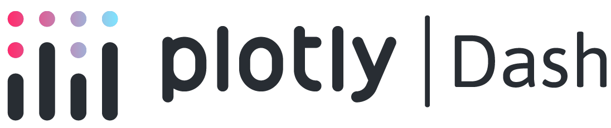
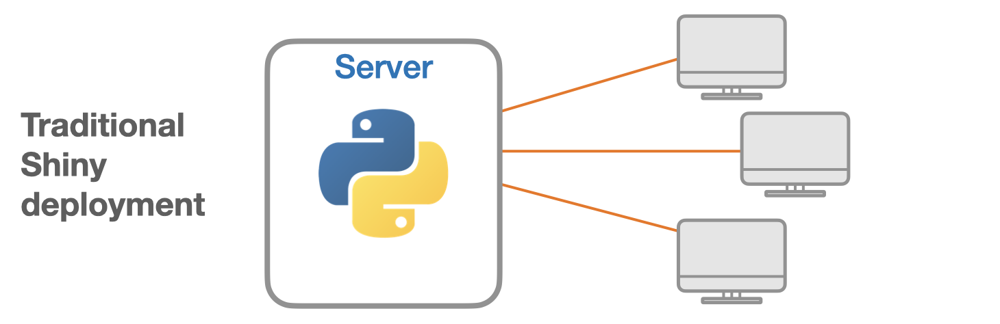
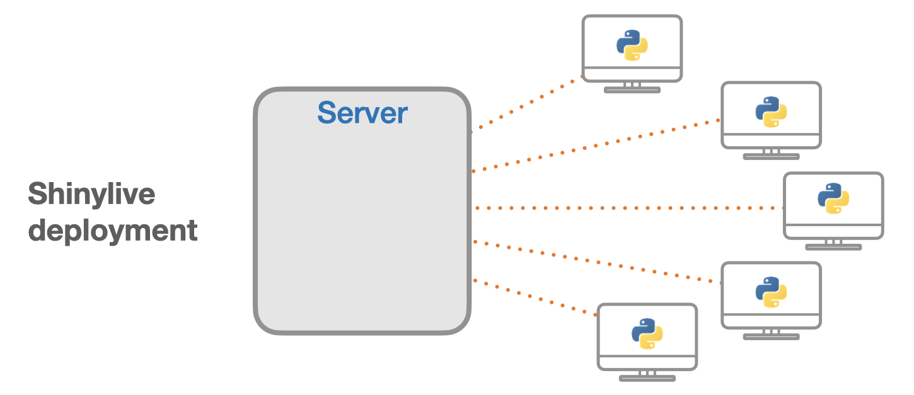

Two paths to Python dashboards:
versus 
Content from the webinar slides for easier browsing.
Please find the Plotly Dash section by Alex Razoumov here.
Web frameworks for science
2011
2012
2013
2017
2018
2019
2022
2024
D3.js, Leaflet
R Shiny (RStudio)
Bokeh, Plotly
Plotly Dash
Observable
HoloViz Panel, Gradio, Streamlit
Python Shiny (RStudio ➔ Posit), Kitware Trame
Python Shiny Express (initial syntax now called Shiny Core)
Setup for this webinar
Packages
shiny
shinywidgets
netcdf4
plotly
polars
scikit-image
shinylive
Core Shiny functionality
For widget outputs (e.g. Plotly, Leaflet)
Data loading
Plotting
DataFrame to store collected data
Measurement of image property
Deployment of Shiny apps to static sites
Installation options
pip, conda, uv are options, but uv is by far the best method.
With uv you can use the backward-compatible uv pip (if you are old-school), but I encourage you to use the superior uv project which is a complete environment and dependency manager (replacing Poetry, pip-tools, and pyenv).
Benefits:
- creates a
pyproject.tomlwith dependencies and Python version, - no need to source the virtual env: just use
uv runbefore commands, - creates a lock file that can be shared for reproducibility.
That’s what we will use here.
Installation with uv project
Initialize a bare uv project:
uv init --bareInstall packages:
uv add netcdf4 plotly polars scikit-image shiny shinylive shinywidgetsYou could then source the virtual env, but we will instead use uv run <command>.
Structure of Shiny apps
Example input
Example output
Example layout
Syntax
from shiny import ui, render, App
app_ui = ui.page_fluid(
ui.input_slider("slider", "Slider", 0, 100, 50),
ui.output_text_verbatim("value"),
)
def server(input, output, session):
@render.text
def value():
return f"{input.slider()}"
app = App(app_ui, server)More verbose, allows for more complex apps.
from shiny.express import input, render, ui
ui.input_slider("slider", "Slider", 0, 100, 50)
@render.text
def value():
return f"{input.slider()}"Compact, works in most situations.
Example 1: Lasso selection
Goal
Here we match Alex’s connected plot app: we draw a scatter plot of 100 random values sampled from a uniform distribution. A lasso lets us select a number of values (user input) and the app returns histograms of the selected values along both axes.
First, let’s look at the code.
Packages
# Generate random data
import numpy as np
# Draw plot
import plotly.express as px
import plotly.graph_objects as go
from plotly.callbacks import Points
# The 2 key packages for the Shiny app
from shiny import App, reactive, ui
from shinywidgets import output_widget, render_widgetVariables
# Set theme
BOOTSWATCH_CERULEAN = "https://cdn.jsdelivr.net/npm/bootswatch@5.3.8/dist/cerulean/bootstrap.min.css"
# Variables for the scatter plot
npoints = 100
xpos = np.random.rand(npoints)
ypos = np.random.rand(npoints)Helper functions
def make_scatter_widget(on_selection):
fig = px.scatter(
x=xpos,
y=ypos,
range_x=[0, 1],
range_y=[0, 1],
width=600,
height=600,
)
fig.update_traces(marker=dict(size=30, opacity=0.8))
fig.update_layout(dragmode="lasso")
widget = go.FigureWidget(fig)
widget.data[0].on_selection(on_selection)
return widget
def make_histogram(values, title):
fig = px.histogram(x=values, nbins=10, width=400, height=280)
fig.update_traces(xbins=dict(start=0, end=1, size=0.1))
fig.update_xaxes(title_text=title, range=[0, 1])
return figUI
This is our app HTML as a string.
app_ui = ui.page_fluid(
ui.tags.h2(
"Lasso selection with connected outputs",
class_="text-primary text-center fs-3 my-3",
),
ui.div(
ui.div(output_widget("g1"), class_="col-auto"),
ui.div(
output_widget("g2"),
output_widget("g3"),
class_="col-auto",
),
class_="row justify-content-center g-3",
),
title="Lasso selection",
theme=BOOTSWATCH_CERULEAN,
)Server function
The server function updates the app with user inputs.
def server(input, output, session):
selection = reactive.value(None)
def on_point_selection(trace, points: Points, state):
selection.set(points)
@render_widget
def g1():
return make_scatter_widget(on_point_selection)
@render_widget
def g2():
selected = selection.get()
if selected is None or not selected.point_inds:
values = []
title = "Select points to see details"
else:
values = list(selected.xs)
title = "x-distribution"
return make_histogram(values, title)
@render_widget
def g3():
selected = selection.get()
if selected is None or not selected.point_inds:
values = []
title = "Select points to see details"
else:
values = list(selected.ys)
title = "y-distribution"
return make_histogram(values, title)Generate app object
app = App(app_ui, server)Run app locally
Save the code to a script called app.py and run it with shiny run app.py.
If you use uv project, prepend it with uv run.
Use --reload for hot reloading upon edits.
The file can be in a subdirectory (to have several apps in the same project).
Example:
uv run shiny run --reload lasso/app.pyYou can now watch the app in a browser at 127.0.0.1:8000.
Resulting app
Click to open the app (Be prepared to wait a bit.)
Example 2: 3D isosurface
Goal
Let’s look at the isosurface example presented by Alex. We generate the isosurface of a 3D dataset for an adjustable isovalue.
Packages
from pathlib import Path
# Memoisation
from functools import lru_cache
# Load data
from netCDF4 import Dataset
# Draw plot
import plotly.graph_objects as go
from skimage import measure
# Create app
from shiny import App, reactive, ui
from shinywidgets import output_widget, render_widgetVariables
# Slider values
SLIDER_MIN = 0.05
SLIDER_MAX = 1.95
SLIDER_STEP = 0.05
DEFAULT_LEVEL = 0.5Load data
def load_density() -> object:
data_path = Path(__file__).with_name("sineEnvelope.nc")
with Dataset(data_path, "r", format="NETCDF4") as root_group:
return root_group.variables["density"][:]
RHO = load_density()Helper functions
def level_key(level: float) -> int:
return int(round(level / SLIDER_STEP))
# @functools.lru_cache memoizes functions, caching up to maxsize
# Speeds up repetitive, expensive, or I/O-bound tasks
@lru_cache(maxsize=16)
def make_figure_for_level(level_value: float) -> go.Figure:
vertices, triangles, _, _ = measure.marching_cubes(RHO, level_value)
return go.Figure(
data=[
go.Mesh3d(
x=vertices[:, 0],
y=vertices[:, 1],
z=vertices[:, 2],
i=triangles[:, 0],
j=triangles[:, 1],
k=triangles[:, 2],
intensity=vertices[:, 2],
colorscale="Viridis",
showscale=True,
)
],
layout=dict(
height=600,
uirevision="keep-camera",
scene=dict(aspectmode="data", uirevision="keep-camera"),
margin=dict(l=0, r=0, t=0, b=0),
),
)
def make_figure(level: float) -> go.Figure:
level_value = level_key(level) * SLIDER_STEP
level_value = min(max(level_value, SLIDER_MIN), SLIDER_MAX)
fig = make_figure_for_level(level_value)
return go.Figure(fig)UI
app_ui = ui.page_sidebar(
ui.sidebar(
ui.input_slider(
"level",
"Isovalue",
min=SLIDER_MIN,
max=SLIDER_MAX,
value=DEFAULT_LEVEL,
step=SLIDER_STEP,
ticks=True,
width="100%",
),
width=220,
),
ui.tags.style(
"""
.bslib-sidebar-layout {
height: 100vh;
}
.app-title {
padding-bottom: 0;
transform: translateY(0.12rem);
}
"""
),
ui.div(
ui.div("Isosurface", class_="app-title text-primary text-center fs-3"),
output_widget("g1"),
class_="p-2 h-100",
),
fillable=True,
title="Representation of points that share the same value from a 3D dataset in a unit cube",
window_title="Isosurface",
)Server function
def server(input, output, session):
fig = go.FigureWidget(make_figure(DEFAULT_LEVEL))
@render_widget
def g1():
return fig
@reactive.effect
def _update_figure():
source = make_figure(input.level())
mesh = source.data[0]
with fig.batch_update():
fig.data[0].x = mesh.x
fig.data[0].y = mesh.y
fig.data[0].z = mesh.z
fig.data[0].i = mesh.i
fig.data[0].j = mesh.j
fig.data[0].k = mesh.k
fig.data[0].intensity = mesh.intensityGenerate app object
app = App(app_ui, server)Run app locally
Same as above.
- Save the code to
app.pyfile. - Run:
uv run shiny run --reload 3d_contour/app.py- Watch the app at 127.0.0.1:8000.
Resulting app
Click to open the app (Be prepared to wait a bit.)
Example 3: data collection
Goal
- Create a dashboard to collect data on training topic requests.
- Validate and store the data in a
course_interest.parquetfile. - Display data analytics.
Packages
from __future__ import annotations
from datetime import UTC, datetime
from pathlib import Path
# For data validation
import re
# Draw plot
import plotly.graph_objects as go
# Save the data in a DataFrame
import polars as pl
# Create app
from shiny import App, reactive, render, ui
from shinywidgets import output_widget, render_widgetVariables
DATA_PATH = Path(__file__).with_name("course_interest.parquet")
EMAIL_PATTERN = re.compile(r"^[^@\s]+@[^@\s]+\.[^@\s]+$")
REQUEST_SCHEMA = {
"submitted_at": pl.Utf8,
"email": pl.Utf8,
"course": pl.Utf8,
}Styling
This is a string of CSS styling for our app. If you find it more tidy, you can put it in a separate file and source it in your script.
Helper functions
def empty_requests() -> pl.DataFrame:
return pl.DataFrame(schema=REQUEST_SCHEMA)
def normalize_course_name(course: str) -> str:
return " ".join(course.split())
def normalize_email(email: str) -> str:
return email.strip().lower()
def load_requests(path: Path = DATA_PATH) -> pl.DataFrame:
if not path.exists():
return empty_requests()
return pl.read_parquet(path).select(list(REQUEST_SCHEMA))
def write_requests(df: pl.DataFrame, path: Path = DATA_PATH) -> None:
df.write_parquet(path)
def append_request(email: str, course: str, path: Path = DATA_PATH) -> pl.DataFrame:
current = load_requests(path)
submission = pl.DataFrame(
[
{
"submitted_at": datetime.now(UTC).strftime("%Y-%m-%d %H:%M:%S UTC"),
"email": normalize_email(email),
"course": normalize_course_name(course),
}
],
schema=REQUEST_SCHEMA,
)
updated = pl.concat([current, submission], how="vertical_relaxed")
write_requests(updated, path)
return updated
def validate_submission(email: str, course: str) -> str | None:
normalized_email = normalize_email(email)
normalized_course = normalize_course_name(course)
if not normalized_email:
return "Please enter an email address."
if not EMAIL_PATTERN.match(normalized_email):
return "Please enter a valid email address."
if not normalized_course:
return "Please enter the course you would like us to build."
return None
def summary_metrics(df: pl.DataFrame) -> dict[str, str]:
if df.height == 0:
return {
"total_requests": "0",
"unique_emails": "0",
"top_course": "No submissions",
}
top_course = (
df.group_by("course")
.len()
.sort(["len", "course"], descending=[True, False])
.row(0, named=True)["course"]
)
unique_emails = df["email"].n_unique()
return {
"total_requests": str(df.height),
"unique_emails": str(unique_emails),
"top_course": top_course,
}
def make_course_figure(df: pl.DataFrame) -> go.Figure:
fig = go.Figure()
if df.height == 0:
fig.add_annotation(
text="No topic requests recorded yet",
x=0.5,
y=0.5,
xref="paper",
yref="paper",
showarrow=False,
font=dict(size=18, color="#5a7188"),
)
fig.update_xaxes(visible=False)
fig.update_yaxes(visible=False)
else:
counts = (
df.group_by("course")
.len()
.sort(["len", "course"], descending=[True, False])
.head(8)
)
fig.add_trace(
go.Bar(
x=counts["len"].to_list(),
y=counts["course"].to_list(),
orientation="h",
marker=dict(color="#2f6da3", line=dict(color="#214d74", width=1)),
hovertemplate="%{y}: %{x} request(s)<extra></extra>",
)
)
fig.update_yaxes(
autorange="reversed",
automargin=True,
ticklabelstandoff=14,
)
fig.update_xaxes(title="Number of requests", dtick=1, gridcolor="#d8e2ee")
fig.update_layout(
template="plotly_white",
height=420,
margin=dict(l=40, r=20, t=40, b=20),
paper_bgcolor="#ffffff",
plot_bgcolor="#ffffff",
title_font=dict(size=20, color="#17324d"),
font=dict(color="#17324d"),
)
return figUI
app_ui = ui.page_fillable(
ui.tags.head(ui.tags.style(APP_CSS)),
ui.div(
ui.div(
ui.div("Research computing course planning", class_="eyebrow"),
ui.h1("Topics requests", class_="header-title"),
ui.p(
ui.HTML("""
Please make sure to look for courses in <a href="https://explora.alliancecan.ca/" target="_blank">Explora</a> before submitting a request.<br>Note that we can't promise that we will satisfy all requests!
"""),
class_="header-copy",
),
class_="header-panel",
),
ui.div(
ui.div(
ui.h2("Submit request", class_="panel-title"),
ui.p(
"Give us a suggestion of a topic you would like us to cover.",
class_="panel-subtitle",
),
ui.input_text(
"email",
"Canadian academic email address",
placeholder="your.name@uni.ca",
),
ui.input_text(
"course",
"Desired topic",
placeholder="Applied time series analysis in Julia",
),
ui.div(
ui.input_action_button(
"save_request",
"Save request",
class_="btn btn-primary",
),
class_="button-row",
),
class_="panel",
),
ui.div(
ui.h2("Requested topics", class_="panel-title"),
ui.div(
ui.div(output_widget("course_plot")),
ui.div(
ui.output_ui("metric_cards"),
ui.output_ui("recent_requests"),
class_="stats-grid",
),
class_="analytics-grid",
),
class_="panel",
),
class_="layout-grid",
),
class_="app-shell",
),
title="Topics requests",
)Server function
def server(input, output, session):
requests_df = reactive.value(load_requests())
@reactive.effect
@reactive.event(input.save_request)
def _save_request():
email = input.email()
course = input.course()
error = validate_submission(email, course)
if error is not None:
ui.notification_show(error, type="warning", duration=4)
return
updated = append_request(email=email, course=course)
requests_df.set(updated)
ui.update_text("email", value="")
ui.update_text("course", value="")
ui.notification_show(
f"Saved request for {normalize_course_name(course)}.",
type="message",
duration=3,
)
@render_widget
def course_plot():
return make_course_figure(requests_df.get())
@render.ui
def metric_cards():
metrics = summary_metrics(requests_df.get())
return ui.div(
ui.div(
ui.span("Total requests", class_="stat-label"),
ui.div(metrics["total_requests"], class_="stat-value"),
class_="stat-card",
),
ui.div(
ui.span("Unique email addresses", class_="stat-label"),
ui.div(metrics["unique_emails"], class_="stat-value"),
class_="stat-card",
),
ui.div(
ui.span("Most requested topic", class_="stat-label"),
ui.div(metrics["top_course"], class_="stat-value"),
class_="stat-card",
),
class_="metric-card-grid",
)
@render.ui
def recent_requests():
df = requests_df.get()
if df.height == 0:
return ui.div(
"The most recent submission will appear here after the first request is submitted.",
class_="empty-box",
)
row = df.tail(1).row(0, named=True)
return ui.div(
ui.div(
ui.span("Most recent request", class_="stat-label"),
ui.div(row["course"], class_="stat-value"),
ui.div(
row["submitted_at"],
class_="recent-meta",
),
class_="stat-card",
),
)App object
app = App(app_ui, server)Resulting app
Click to open the app (Be prepared to wait a bit.)
The apps in this talk are running with shinylive (see next).
Shinylive is extremely convenient, but it has limitations.
One of them is the delay in launching apps. Another is that you can’t collect data.
This app is thus for demo only and cannot be used unless deployed in a standard Shiny server.
Deployment
Standard deployment

A server runs the app. Users are clients connecting to the server.
Options
- Your own server (VM in Alliance cloud or commercial cloud, lab server).
- Posit Connect Cloud (free tier/paid plans).
Shinylive

A website hosting service serves the files. Users run the app in their browser thanks to WebAssembly.
Deployment options
- Quarto dashboard.
- Shinylive deployment.
Shinylive deployment
Put your app.py file in a directory and run shinylive export <your-app-dir> site.
If you use uv project, prepend it with uv run:
uv run shinylive export 3d_contour siteMake sure not to have other Python scripts in your app directory or it will mess things up.
You can add a requirements.txt file to the app if needed.
Deploy to static web hosting services (GitHub pages, Netlify, etc.).
Comparison with Plotly Dash
| Dash | Shiny |
|---|---|
| Stateless apps and callbacks allow very large horizontal scaling. | Stateful apps without callbacks are reactive and require less code. |
| Dash transmits data between the server and the client using JSON so Dash only accepts lists or dictionaries. | Supports more data types and libraries (e.g. strings, Polars/pandas DataFrames, DuckDB databases). |
| Natively accepted plotting library: Plotly (converters extend this to some degree). | Supports more plotting libraries (Plotly, Matplotlib, Seaborn). |
| Only supports standard deployment. | Also supports sharing of apps via URLs or gists and deployment to websites. |
Resources
Python Shiny GitHub repo
Official documentation
Components
Layouts
Templates
Playground
Shinylive
AI Shiny assistant
Shiny for AI
Integration with Quarto